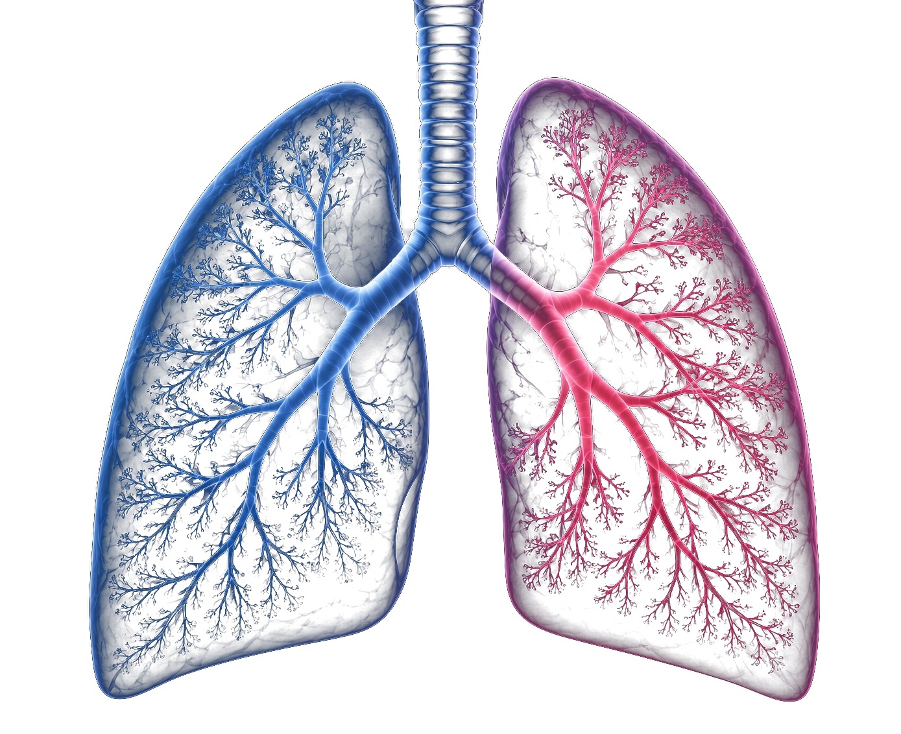

Science·Education·Compassion
The Bose FABLE Lab bridges the laboratory and the operating room, with mechanobiology research, fetal surgical care, and plain-language education for families facing congenital diaphragmatic hernia.

Research
Our central question is how the developing lung senses and responds to mechanical stretch, and how that biology can be harnessed to improve outcomes in congenital diaphragmatic hernia (CDH).
How lung epithelial cells convert physical stretch into fate decisions through the PIEZO1 to calcium to YAP pathway.
Reframing fetal tracheal occlusion as a dose- and duration-dependent biological stimulus, to explain why outcomes vary between patients.
Primary human neonatal lung cells under controlled stretch, precision-cut lung slices, and human spatial transcriptomics across control, CDH, and FETO-treated lungs.
Publications
Peer-reviewed work spanning in utero gene and base editing, lipid-nanoparticle delivery, fetal surgery, and the ethics of fetal intervention.
For Families
If you have a new CDH diagnosis, you are likely frightened and searching for clear answers. These plain-language guides, written by a pediatric surgeon, walk the whole journey. They are educational and are not a substitute for your own care team.
What CDH is, how severity is estimated, and the first steps after diagnosis.
The before-birth procedure, who it can help, and the biology behind lung growth.
The first hours, breathing support, pulmonary hypertension, and ECMO.
When the repair happens, patch repairs, and what recovery looks like.
Feeding, growth, breathing, and life as your child grows.
How we study fetal lung development and where fetal therapy is headed.
About the PI
Dr. Bose is a pediatric surgeon and surgeon-scientist who directs the Bose FABLE Lab. He is an Assistant Professor of Surgery at Baylor College of Medicine and a pediatric surgeon at Texas Children's Hospital, affiliated with the Texas Children's Fetal Center.
His program bridges the operating room and the bench, centered on how the developing lung senses mechanical force and how fetal interventions such as tracheal occlusion (FETO) can be understood and improved.
He completed general surgery training at Brigham and Women's Hospital, a fetal research fellowship at the Children's Hospital of Philadelphia Center for Fetal Research, and pediatric surgery fellowship at Texas Children's Hospital. He earned his MD from the Perelman School of Medicine, an MBA from the Wharton School, and an MSc from the London School of Hygiene and Tropical Medicine. As an undergraduate, he was a student in the Vagelos Program in Life Sciences and Management at the University of Pennsylvania.
Contact
For questions about the lab, collaborations, or trainee positions in fetal lung biology and mechanobiology.
If your care team has raised a fetal consultation, ask them for a referral to a fetal care center. Information here is educational and is not medical advice.